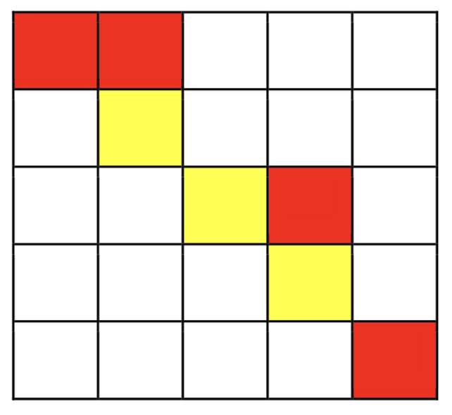
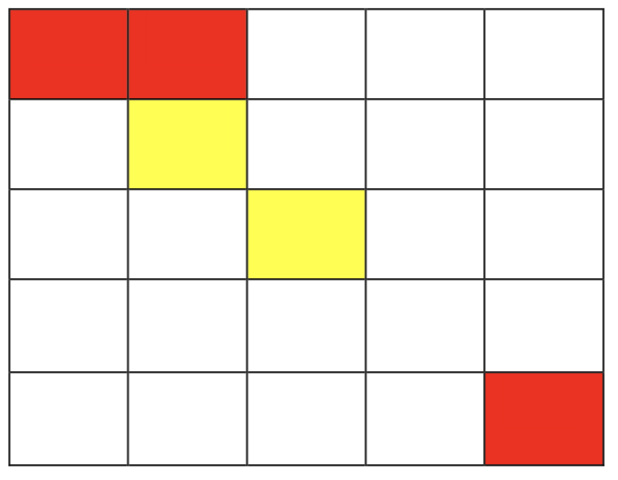

【输入输出样例1说明】

从(1，1)开始，走到(1，2)不花费金币
从(1，2)向下走到(2，2)花费1枚金币
从(2，2)施展魔法，将(2，3)变为黄色，花费2枚金币
从(2，2)走到(2，3)不花费金币
从(2，3)走到(3，3)不花费金币
从(3，3)走到(3，4)花费1枚金币
从(3，4)走到(4，4)花费1枚金币
从(4，4)施展魔法，将(4，5)变为黄色，花费2枚金币
从(4，4)走到(4，5)不花费金币
从(4，5)走到(5，5)花费1枚金币
共花费8枚金币。
【输入输出样例2说明】

从(1，1)走到(1，2)，不花费金币
从(1，2)走到(2，2)，花费1金币
施展魔法将(2，3)变为黄色，并从(2，2)走到(2，3)花费2金币
从(2，3)走到(3，3)不花费金币
从(3，3)只能施展魔法到达(3，2)，(2，3)，(3，4)，(4，3)
而从以上四点均无法到达(5，5)，故无法到达终点，输出-1
【数据规模与约定】
对于30%的数据，$1≤m≤5，1≤n≤10$。
对于60%的数据，$1≤m≤20，1≤n≤200$。
对于100%的数据，$1≤m≤100，1≤n≤1,000$。
 Comet OJ
Comet OJ